| About IR |
| Editors |
| Author instructions |
| Copyright |
| Author index |
| Subject index |
| Search |
| Reviews |
| Register |
| Home |

Volume 7 No 1 October 2001
ISSN 1368-1613
If you find Information Research useful, please sign in and we'll notify you of future issues. |
Contents
 General Editorial
General Editorial
Special Issue on Environmental Scanning and Competitive Intelligence
Issue Editorial
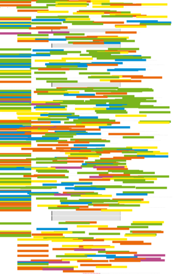Environmental scanning as information seeking and organizational learning, by
Chun Wei Choo, University of Toronto, Canada
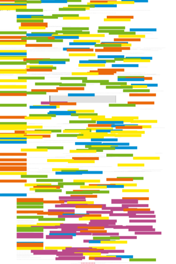Scanning and vicarious learning from adverse events in health care, by Anu MacIntosh-Murray, University of Toronto, Canada
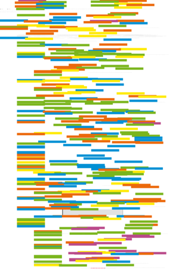Factors influencing environmental scanning in the organizational context, by Zita Correia, National Institute for Engineering and Industrial Technology, Lisbon, Portugal and T.D. Wilson, University of Sheffield, UK
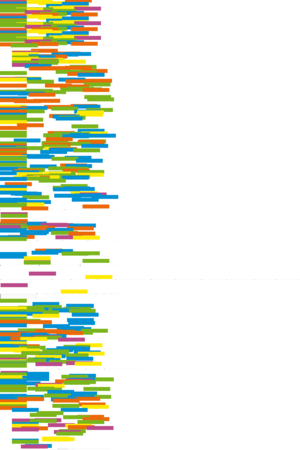Information as a tool for management decision making: a case study of Singapore, by Shrianjani Marie (Gina) de Alwis, Singapore Institute of Management and Susan Ellen Higgins, Nanyang Technological University, Singapore
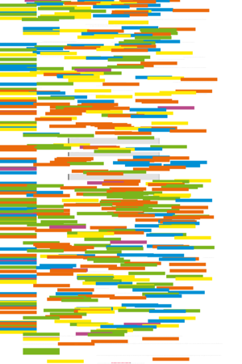Finding competitive intelligence on Internet start-up companies: a study of secondary resource use and information-seeking processes, by Sanda Erdelez, University of Missouri-Columbia and Nicole Ware, University of Texas at Austin, USA
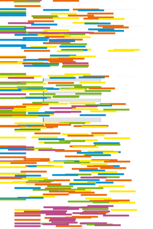Environmental scan on women's health information resources in Ontario, Canada, by Christine Marton, University of Toronto, Canada
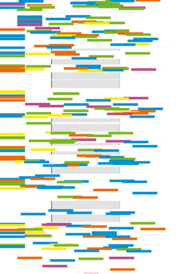Intelligence obtained by applying data mining to a database of French theses on the subject of Brazil, by Kira Tarapanoff, Luc Quoniam, Rogério Henrique de Araújo Júnior, and Lillian Alvares, Brazil.
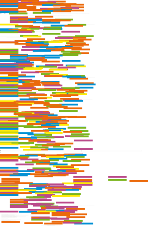Using information technology to support knowledge conversion processes, by Rodrigo Baroni de Carvalho, Banco de Desenvolvimento de Minas Gerais and Marta Araújo Tavares Ferreira, Universidade Federal de Minas Gerais, Brazil.
Additional Refereed Papers
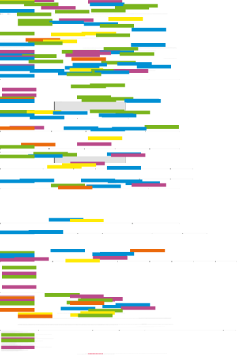Bibliometrics of electronic journals in information science, by Donald T. Hawkins, Editor-in-Chief, Information Science Abstracts, Medford, NJ, USA
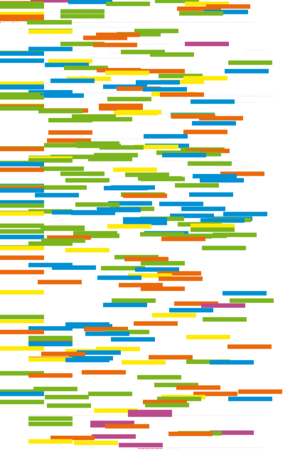Strategy, information processing and scorecard models in the UK financial services sector, by Judith Broady-Preston & Tim Hayward, University of Wales, Aberystwyth, UK.
Working Paper
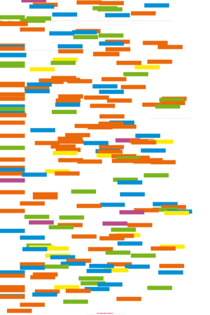Focus on further education of librarians in Latvia, by Iveta Gudakovska, University of Latvia, Riga, Latvia
 Abstracts in Spanish/Resúmenes en Español
Abstracts in Spanish/Resúmenes en Español
Calls for papers
Fourth International Conference on Information Needs, Seeking and Use in Different Context - ISIC2002
Call for Papers: "Knowledge Management and the Emperor's New Clothes" - a special issue of Information Research
What's in the other free e-journals?
Check this page for more papers on information research and practice.
Reviews
Jean Aitchison, Alan Gilchrist, and David Bawden. Thesaurus construction and use: a practical manual. 4th ed. ASLIB: London, 2000.
Sheila Corrall Strategic management of information services: a planning handbook. London: Aslib/IMI, 2000.
Leo Egghe and Ronald Rousseau Elementary Statistics for Library and Information Service Management. London: Aslib-IMI, 2001
EndNote 5.0. Berkeley, CA: ISI ResearchSoft.
Lars Höglund, Tom Wilson (eds.). The new review of information behaviour research. Vol. 1: Studies of information seeking in context. ISIC III, The third international conference on research in information needs, seeking and use in different contexts, Göteborg, 2000. London: Taylor Graham Publishing, 2000
Tania Konn. Guide to business information on Russia, the NIS and the Baltic States. 3rd ed. London: Aslib-IMI, 2000
Jennifer Rowley and John Farrow. Organizing knowledge: an introduction to managing access to information. 3rd ed. Aldershot: Gower, 2000.
Raymond A. Wall, Sandy Norman, Paul Pedley, and Frank Harris. Copyright made easier. 3rd ed. London: Aslib-IMI, 2000
Paul Pedley Free business and industry information on the web. London: Aslib-IMI, 2000
Other links
Check the other resources available at InformationR.net - free resources for information researchers.
Information Research: an international electronic journal, is published four times a year by Professor Tom Wilson of the Department of Information Studies, University of Sheffield in association with | |
Nanyang Technological University, Singapore |
University of Tampere, Finland |
Pennsylvania State University, USA |
University of Vilnius, Lithuania |
Design and Editorial content © T.D. Wilson 1996-2001